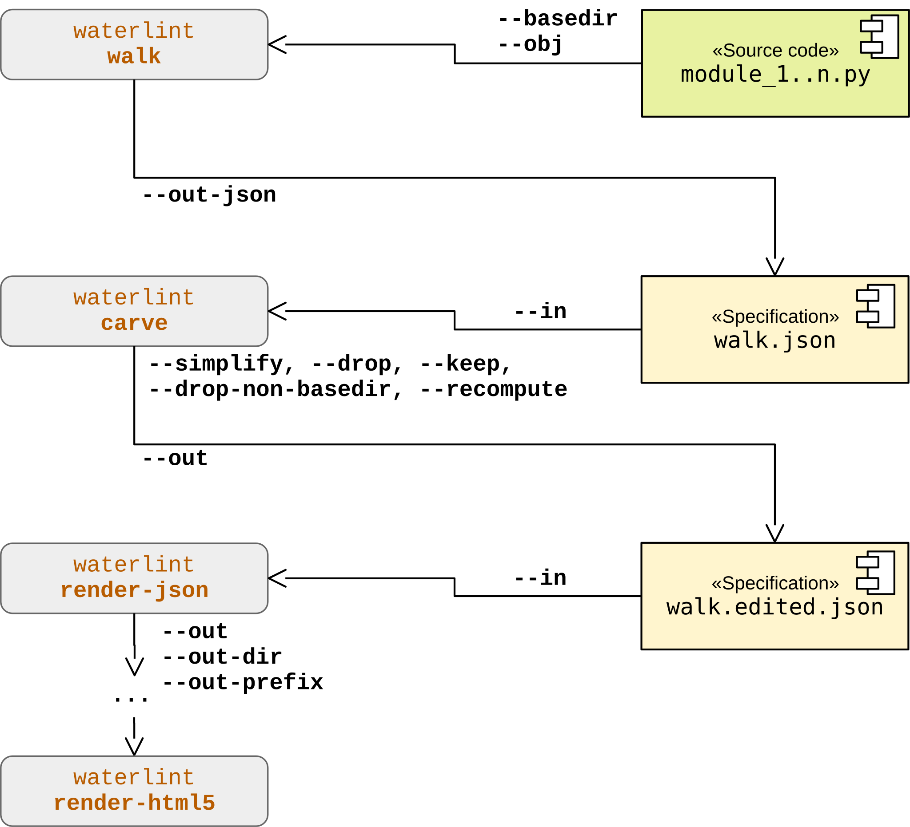

7. Overview: I/O Layers¶
This section is informative.
7.1. From source to HTML¶
The following diagram illustrates the typical workflow for generating both LLM-readable and human-readable documentation, including the integration of code examples. It highlights the transformation from source code to structured JSON artifacts and finally to rendered HTML.
The individual stages of this workflow are described in detail in sections The JSON I/O Layer and The HTML Output Layer.

7.2. Walk and carve¶
waterlint provides a mechanism to inspect, filter, and refine
the set of objects that enter the documentation pipeline. This functionality
is implemented by the combination of the subcommands walk and
carve.
The command walk expects one or more modules located within a
common base directory and traverses all reachable documented objects. Its
output is a canonical intermediate JSON artifact that reflects the current
object graph and visibility state of the source tree.
This artifact is useful as a source of truth for later processing, but it is not intended as a general exchange format. Many entries are tied to concrete filesystem paths and local name resolution, so the resulting JSON is highly meaningful within the originating tree but not portable across unrelated environments.
The output (text or JSON) represents the discovered object graph. The text output is intended for human inspection, while the JSON output provides a machine-readable intermediate representation suitable for further processing.
By default, each entry contains fields such as:
qualname– qualified name of the objectkind– object category (module, class, function, …)scope– visibility scope as defined in this documentfile– path to the module containing the objectlineno– source line number of the object definitionincluded– whether the object participates in a valid Waterloo artifactreason– reason for exclusion (e.g.no_doc,invalid)
In text mode, file paths are compacted and accompanied by a legend. In JSON mode, paths are represented canonically.
The JSON output is described by schema
wtrl-walk-json-*.*.*.schema.json
and can be validated using
waterlint validate-json
The command carve provides a deliberate editing and projection
layer for walk JSON artifacts. In particular, the --drop and
--keep options allow selective inclusion or exclusion of
namespaces by qualified-name prefix chains.
Conceptually, carve acts as an operator transforming one walk
JSON artifact into another walk JSON artifact. It preserves the canonical
schema shape, but may simplify, filter, and recompute derived summary data.
The resulting JSON artifact can then be passed directly to
waterlint render-json instead of specifying modules explicitly,
as illustrated in the following diagram.
